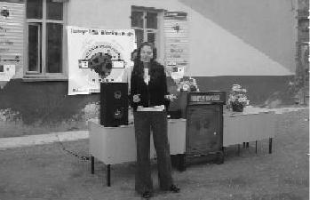

Herkesin hayatında kilometre taşları vardır. O kilometre taşında yaşanılanlar olmasa insan farklı yerlere sürüklenir. TUP da benim için farklı bir kilometre taşı, hayatı değiştiren ve aslında hayat veren. Gelişen, geliştiren, insana dokunan, insanlığını hatırlatan bir proje TUP. (Nihan Özel)
Nihan projenin liderlerinden. Tuttuğunu koparır. Gitti, Amerika'da, Polonya'da bile eğitim verdi. Bir yıl projeyi yönetti. Şimdi bir firmanın ilk yöneticisi. Küçükken bir projeye liderlik yapabiliyorsa ileride yapamayacağı hiçbir şey yok Nihan'ın. Ona çok güveniyoruz.